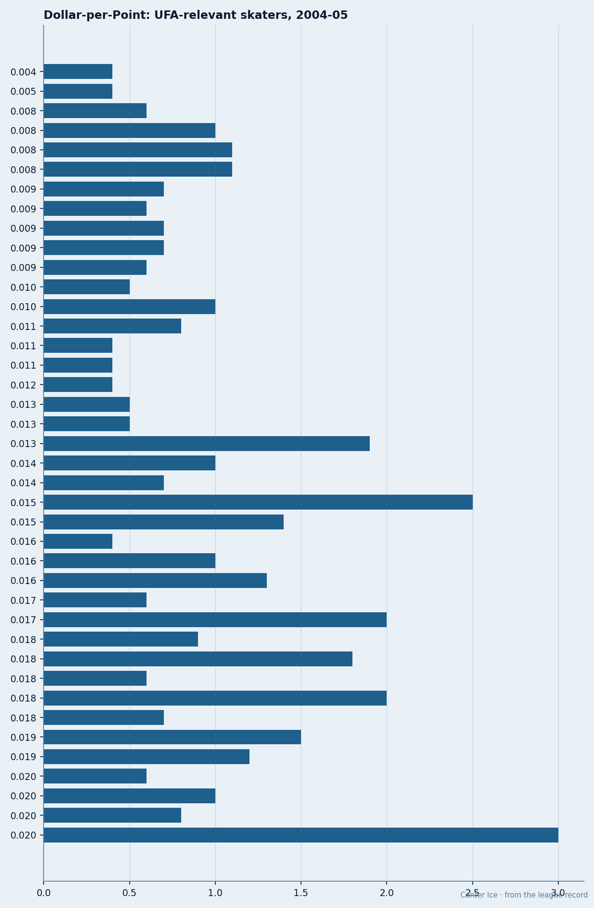

Dollar-per-Point: The Expiring Class, Ranked
The league's 24- and 25-year-old stars are producing at $20K a point. The veterans they'll replace next summer cost three times that.
 Doug ReimerAnalytics editor, ex-video coach · The Slot Report
Doug ReimerAnalytics editor, ex-video coach · The Slot Report
 Mike Comrie84 is producing 48 points in 26 games on $1.00M. That works out to $0.02M per point, the cheapest top-line contract in hockey.
Mike Comrie84 is producing 48 points in 26 games on $1.00M. That works out to $0.02M per point, the cheapest top-line contract in hockey.  Mike Sillinger88, one slot up the depth chart in
Mike Sillinger88, one slot up the depth chart in  Phoenix Coyotes, is producing 27 points in 26 games on $1.80M, or $0.07M per point. Both are on expiring deals. One is a franchise centre at 24. The other is a 33-year-old middle-sixer with 96 faceoff.
Phoenix Coyotes, is producing 27 points in 26 games on $1.80M, or $0.07M per point. Both are on expiring deals. One is a franchise centre at 24. The other is a 33-year-old middle-sixer with 96 faceoff.
The spread between the cheapest and most expensive contract in the expiring class runs from $0.02M per point to $0.07M per point, and that's the decision every GM faces this month.
I pulled every skater with one year left on his contract and at least 20 games this season. The salary figures come from the Contract Ledger. The points are current through December 7. The method is simple: salary divided by points, in millions.

The bottom of the table tells you more than the top
The cheap contracts are mostly what you'd expect: young players on entry-level deals producing at or above their base. Mike Comrie at $0.02M/pt and  Ilya Kovalchuk84 at $0.03M/pt are the obvious ones.
Ilya Kovalchuk84 at $0.03M/pt are the obvious ones.  Marian Gaborik95, playing at a 95 overall with 34 points in 26 games on $1.10M, sits at $0.03M/pt. Those are bargains because the system hasn't repriced them yet.
Marian Gaborik95, playing at a 95 overall with 34 points in 26 games on $1.10M, sits at $0.03M/pt. Those are bargains because the system hasn't repriced them yet.
The expensive contracts are where it gets uncomfortable for their clubs.
Mike Sillinger at $0.07M/pt is the worst value among the expiring class. He grades 88 in the Book, has a 96 faceoff that keeps him in the top six, and carries $1.80M. The problem is the output: 27 points in 26 games is not 88-level production. It's 82-level production on 88-level money. Phoenix Coyotes has to decide whether the faceoff wins are worth that premium against someone cheaper who scores 20 instead of 27.
 Eric Daze81 at $0.07M/pt is the other albatross. $3.00M for 45 points in 25 games sounds fine until you note his overall is 81. He's producing at roughly the rate of
Eric Daze81 at $0.07M/pt is the other albatross. $3.00M for 45 points in 25 games sounds fine until you note his overall is 81. He's producing at roughly the rate of  Sergei Samsonov85 (43 points, 25 games, $1.90M, $0.04M/pt) at 58 percent more money.
Sergei Samsonov85 (43 points, 25 games, $1.90M, $0.04M/pt) at 58 percent more money.  Chicago Blackhawks is paying a 9th-man price for a 6th-man production level.
Chicago Blackhawks is paying a 9th-man price for a 6th-man production level.
 Todd Bertuzzi95, the highest-graded player in the class at 95 overall, sits at $0.06M/pt. That's expensive for a 95, but 45 points in 26 games at $2.60M is defensible production. The question isn't whether
Todd Bertuzzi95, the highest-graded player in the class at 95 overall, sits at $0.06M/pt. That's expensive for a 95, but 45 points in 26 games at $2.60M is defensible production. The question isn't whether  Vancouver Canucks re-signs him. The question is whether they can, given they've got $34.94M in payroll against a revenue of $40.53M and a profit of only $21.93M.
Vancouver Canucks re-signs him. The question is whether they can, given they've got $34.94M in payroll against a revenue of $40.53M and a profit of only $21.93M.
The middle is where the clubs get burned
| Player | Club | Pos | Overall | Salary | Points | GP | $M/pt |
|---|---|---|---|---|---|---|---|
| Comrie |  Edmonton Oilers Edmonton Oilers | C | 84 | $1.00M | 48 | 26 | 0.02 |
| Kovalchuk |  Atlanta Thrashers Atlanta Thrashers | LW | 84 | $1.10M | 40 | 24 | 0.03 |
| Havlat |  Ottawa Senators Ottawa Senators | LW | 88 | $0.90M | 40 | 24 | 0.02 |
| Gaborik |  Toronto Maple Leafs Toronto Maple Leafs | RW | 95 | $1.10M | 34 | 26 | 0.03 |
| Sturm |  San Jose Sharks San Jose Sharks | LW | 86 | $1.00M | 31 | 25 | 0.03 |
| Morrow |  Dallas Stars Dallas Stars | LW | 84 | $1.30M | 37 | 28 | 0.04 |
| Richards | Toronto Maple Leafs | C | 84 | $1.00M | 28 | 26 | 0.04 |
| Samsonov |  Boston Bruins Boston Bruins | LW | 85 | $1.90M | 43 | 25 | 0.04 |
| Langenbrunner |  New Jersey Devils New Jersey Devils | RW | 86 | $2.10M | 45 | 23 | 0.05 |
| Chara | Ottawa Senators | D | 84 | $1.70M | 35 | 24 | 0.05 |
| Smyth | Edmonton Oilers | LW | 85 | $2.50M | 46 | 26 | 0.05 |
| Bertuzzi | Vancouver Canucks | RW | 95 | $2.60M | 45 | 26 | 0.06 |
| Roberts | Toronto Maple Leafs | LW | 85 | $2.70M | 32 | 26 | 0.06 |
| Sillinger | Phoenix Coyotes | C | 88 | $1.80M | 27 | 26 | 0.07 |
| Daze | Chicago Blackhawks | LW | 81 | $3.00M | 45 | 25 | 0.07 |
Three clubs have three different problems
Toronto Maple Leafs has three players in this class: Gaborik at $0.03M/pt,  Brad Richards84 at $0.04M/pt, and
Brad Richards84 at $0.04M/pt, and  Gary Roberts85 at $0.06M/pt. The Gaborik and Richards deals are the reason Toronto Maple Leafs has the league's best payroll-per-point ratio at $1.59M per point. Roberts at $2.70M for 32 points in 26 games is the one they'll let walk. He's 38. The $2.70M buys the next year of a 39-year-old's decline.
Gary Roberts85 at $0.06M/pt. The Gaborik and Richards deals are the reason Toronto Maple Leafs has the league's best payroll-per-point ratio at $1.59M per point. Roberts at $2.70M for 32 points in 26 games is the one they'll let walk. He's 38. The $2.70M buys the next year of a 39-year-old's decline.
Ottawa Senators holds the most balanced hand.  Martin Havlat88 at $0.02M/pt and
Martin Havlat88 at $0.02M/pt and  Zdeno Chara84 at $0.05M/pt give them a top-pairing defenceman and a 40-point winger on the same year of money. Chara's $1.70M is the market-rate number for an 84-overall defenceman with 35 points. Havlat's $0.90M is underpriced by roughly $1M based on what Ottawa Senators will pay him next year.
Zdeno Chara84 at $0.05M/pt give them a top-pairing defenceman and a 40-point winger on the same year of money. Chara's $1.70M is the market-rate number for an 84-overall defenceman with 35 points. Havlat's $0.90M is underpriced by roughly $1M based on what Ottawa Senators will pay him next year.
Edmonton Oilers has the sharpest contrast inside a single roster. Comrie at $0.02M/pt is the cheapest contract on the sheet.  Ryan Smyth85 at $0.05M/pt is producing at a similar per-game rate (46 in 26 versus 48 in 26) but costs 2.5 times as much. The league-wide spread between those two contracts is $1.50M for 2 points of production difference. Edmonton Oilers should be happy with both. The spread just tells you how much the system overpays for 85-grade veterans relative to 84-grade 24-year-olds.
Ryan Smyth85 at $0.05M/pt is producing at a similar per-game rate (46 in 26 versus 48 in 26) but costs 2.5 times as much. The league-wide spread between those two contracts is $1.50M for 2 points of production difference. Edmonton Oilers should be happy with both. The spread just tells you how much the system overpays for 85-grade veterans relative to 84-grade 24-year-olds.
What the Index adds
The Development Index reframes two of these. Gaborik is up 6 on the Index and playing at a 95. If that holds through the full 82, his $1.10M becomes a $3M contract in free agency, and Toronto Maple Leafs loses him. Kovalchuk is up 5 and producing 40 points in 24 games. At $1.10M and 21 years old, he's the best contract in the class by any measure. Atlanta Thrashers, at $36.79M in payroll with 14 points and a $2.63M per-point ratio, cannot afford him. That's the league's clearest mismatch: a team with no money holding the cheapest elite player.